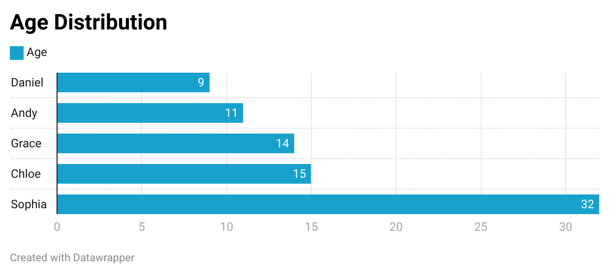

Black Hat:

This chart is classified as a black hat visualization because:
- The x axis indicating age starts at 5 instead of 0.
- Bars are not ordered which makes it difficult to quickly see the max/min values.
- There is no label/legend for the x axis.
White Hat:
